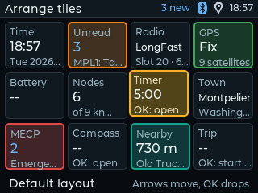
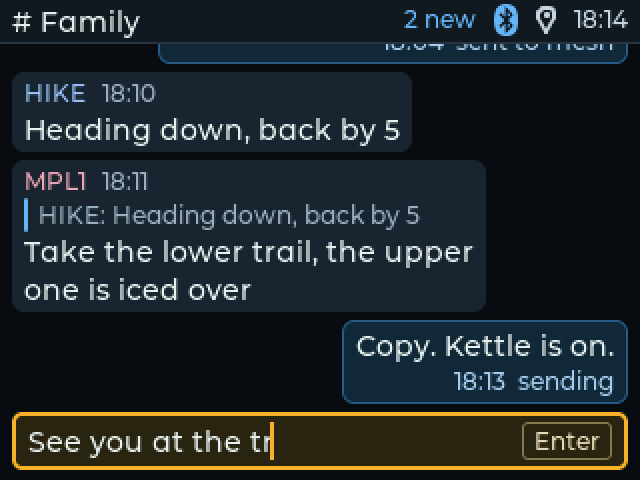
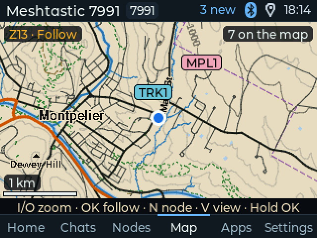
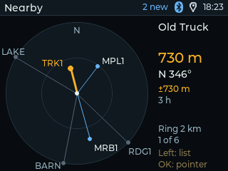

Meshtastic for the ThinkNode M9, driven by its keys
JinxMesh is free firmware for the Elecrow ThinkNode M9. It replaces the touch interface with one made for the M9's keyboard and d-pad, and adds offline maps, navigation and a set of apps for the field.
Flash it from your browser Download the filesOpen source, GPL-3.0. Built on Meshtastic firmware 2.8.3. Unofficial.

Why it exists
The ThinkNode M9 is a lovely piece of hardware: a real keyboard, a d-pad, a bright screen, GPS, an SD card slot. What it does not have is a touch screen.
The interface it ships with was designed for touch and then put on a device without it. Getting around with the d-pad was a chore, and a good part of what the radio can do could not be reached from the device at all. You ended up pulling out a phone to do things the M9 has every key for.
What JinxMesh does about it
JinxMesh is an interface written for this device from the start. Every screen is laid out for the keys you actually have: the arrows move, OK opens, holding OK brings up a menu for whatever is in focus, Back goes back, and typing a letter searches.
With the keyboard doing the work, there was room to add what a handheld radio should be able to do on its own: read a map, find the way, and set itself up without a phone.
What you get
Chats that keep up
Channels and direct messages with unread counts, drafts, quote replies, reactions, quick replies, search and pinned chats. Each message of yours says how far it got.
Offline maps
Vector maps drawn on the device from files on the SD card: contours, water, roads, trails and names. Ready-made maps cover the United States and Canada.
Navigation
A route by road or on foot to a node, a waypoint or coordinates, with the next turn, a turn list and the route on the map. Routes of many stops can be saved.
Apps for the field
Nearby nodes with distance and direction, RF monitor, emergency messages in plain words, town locator, trip odometer, signal log, compass, stopwatch and timer.
Settings on the device
Region, modem preset, channels with QR sharing, names, display, position sharing, Bluetooth, Wi-Fi and sounds. No phone needed to set up.
Still works with your phone
Bluetooth and the screen run together. A message sent from the Meshtastic app shows on the M9, and the other way around.



How to install
The easy way: open the web flasher in Chrome or Edge on a computer, plug the M9 in, and press a button. It installs or updates the firmware and can load maps for your area onto the SD card.
Prefer the command line? JinxMesh is flashed over the M9's USB port like any ESP32 firmware, with esptool and a USB-C data cable.
-
Download
Get the two firmware files from the latest release. The one ending in
.factory.binis for a first install. The other.binis for later updates. -
Flash
A first install erases the device, so export any configuration you want to keep first.
pip install esptool esptool.py --chip esp32s3 --port PORT --baud 230400 erase_flash esptool.py --chip esp32s3 --port PORT --baud 230400 write_flash 0x0 firmware-thinknode_m9-tft-kb-VERSION.factory.binNo Python? Open esptool-js in Chrome or Edge, connect, erase, and program the factory file at address
0x0. -
Set your region
Restart the M9, then go to Settings, Radio, Region. Until a region is set the radio and the GPS stay off.
-
Add maps (optional)
Pick your states or provinces in the web flasher and it writes them to the SD card. Or copy the map pieces yourself to
/maps/state/or/maps/province/; the README lists where to get them.
Updating later keeps your settings, channels and chats:
esptool.py --chip esp32s3 --port PORT --baud 230400 write_flash 0x10000 firmware-thinknode_m9-tft-kb-VERSION.binIf esptool cannot connect, unplug the cable, plug it back in and flash right away, and use a port on the computer itself instead of a hub. The install guide has the details, and the way back to stock Meshtastic.
Read more
User guide: every key, screen, app and setting.
Maps: how they are made, and making your own.
Building: compile it yourself and run the simulator.
Changelog: what changed in each release.
Fair warning
It is pretty stable, but use it at your own risk. JinxMesh is a hobby project for one board, the ThinkNode M9. Some features have only been tried in the simulator so far. Found a problem? Open an issue.
If JinxMesh is useful to you, you can support the work: